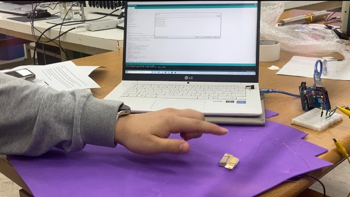
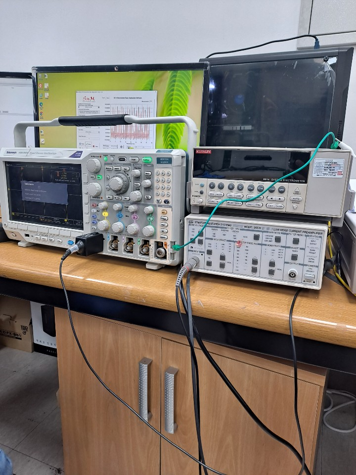
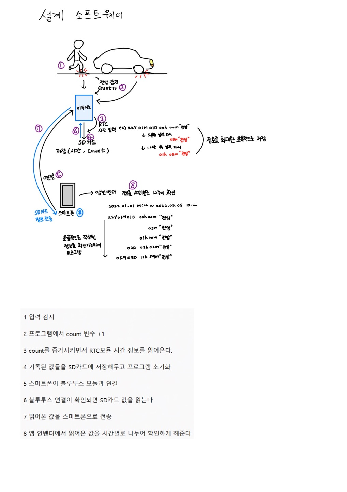
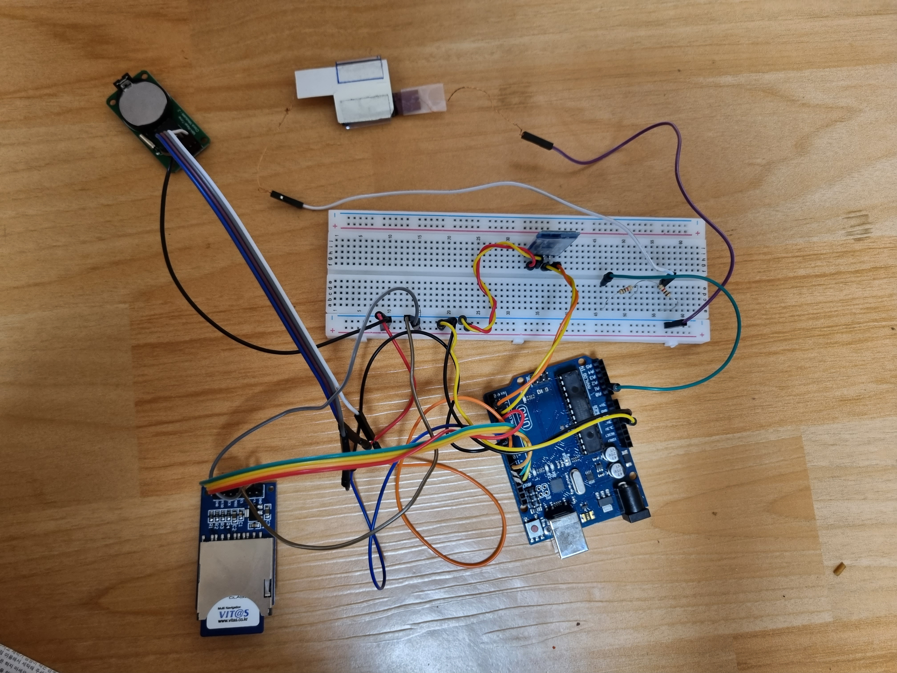
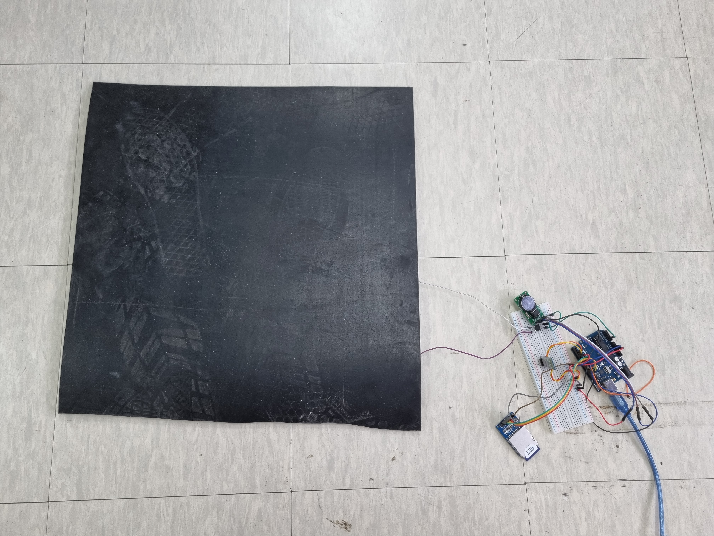
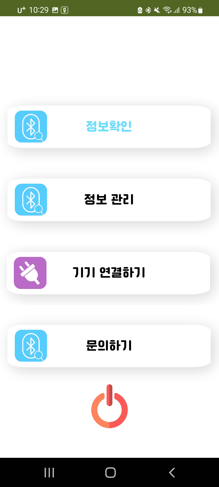
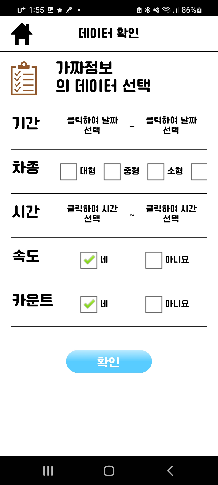
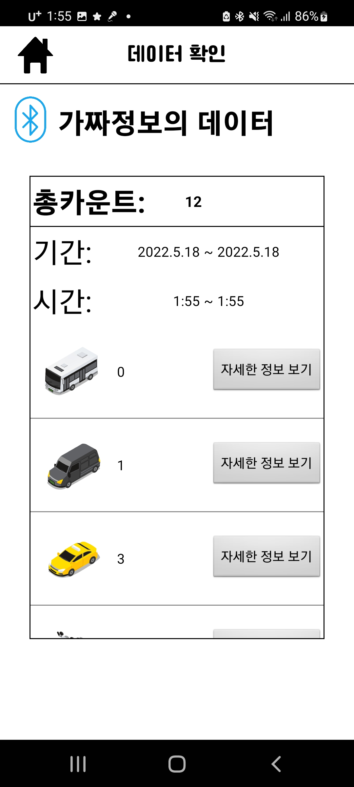

인력·설치 비용이 크고, 수집한 자료를 다시 집계해야 했습니다.
CAPSTONE DESIGN · TEAM LEADER · EMBEDDED SYSTEM
마찰전기 센서 기반
교통량 기록·조회 시제품
차량 통과를 모사한 센서 신호를 계수하고 차동 데이터와 시간 정보를 함께 저장한 뒤, 스마트폰에서 원하는 기간의 기록을 조회할 수 있도록 센서·회로·펌웨어·앱을 하나의 시제품으로 통합했습니다.
- 기간
- 2022.03 — 2022.06
- 역할
- 팀장·하드웨어·소프트웨어
- 데이터 흐름
- 센서 → RTC·SD → Bluetooth
- 사용자 화면
- MIT App Inventor
휴대형 교통량 측정 장치 기획
교통량 조사는 많은 인력과 시간이 필요하고, 매립형 장비는 설치와 유지 비용이 큽니다. 필요한 구간에 간편하게 설치해 데이터를 계속 수집할 수 있는 장치를 목표로 정했습니다.
팀원들과 조사 방식을 비교한 뒤, 센서 통과 신호를 자동 기록하고 스마트폰에서 조회하는 휴대형 장치를 목표로 정했습니다.
차량 하중으로 발생하는 전기 신호를 이벤트로 검출하도록 했습니다.
현장에서 장치를 회수하지 않고 스마트폰으로 결과를 확인하도록 구성했습니다.
센서 제작·출력 신호 측정
압력에 따른 전압 입력을 먼저 확인하고, 팀원들과 마찰전기 소자를 제작해 센서로 사용했습니다.
압전·압력 센서와 마찰전기 소자를 비교했습니다. Arduino로 입력 신호를 검출하고, 제작한 마찰전기 소자의 출력은 오실로스코프·정밀 계측 장비로 확인했습니다.


센서 검출·저장·조회 구조
센서 검출 시각과 카운트를 저장하고, 앱 요청에 따라 기록을 전송하도록 데이터 흐름을 구성했습니다.
01신호 검출·계수기준값을 넘는 센서 입력을 차량 통과 이벤트로 판단
02시각 결합RTC에서 날짜와 시간을 읽어 카운트에 연결
03로컬 저장센서 차동 데이터와 시간·누적 카운트를 SD 카드에 기록
04무선 조회요청 시 저장 데이터를 Bluetooth로 앱에 전달

Arduino 센서·저장·통신 회로
Arduino를 중심으로 센서 입력, RTC 시각 정보, SD 카드 저장과 Bluetooth 통신 모듈을 결합해 독립적으로 기록하고 필요할 때 조회할 수 있는 시제품을 만들었습니다.
차량 통과를 모사한 입력이 발생하면 센서 차동 데이터와 카운트·시각을 저장하고, 앱 요청에 따라 기록을 전송하도록 구성했습니다.


App Inventor 기록 조회 앱
App Inventor로 Bluetooth 연결과 날짜·시간별 기록 조회 화면을 구현했습니다.
Arduino가 SD 카드 기록을 읽어 Bluetooth 요청에 응답하도록 전송 형식을 맞췄습니다. 앱에서는 기간별 누적 카운트를 확인하고, Firebase 연동과 분류 조건 선택 화면을 구성했습니다. 차종·속도·중량의 실제 분류는 확장 목표입니다.




담당 역할과 구현 결과
팀장으로 하드웨어 검토, 펌웨어·앱 개발과 통합 시험을 맡았습니다. 자료조사와 소자 제작은 팀원들과 함께 진행했으며, 마찰전기 원리 소개와 Blender 프로젝트 소개 영상 2편을 제작했습니다.
구현 결과
- 차량 통과를 모사한 센서 입력을 이벤트로 검출하고 누적 카운트로 변환했습니다.
- 센서 차동 데이터와 RTC 시각·카운트를 SD 카드에 함께 저장하도록 구성했습니다.
- Bluetooth 요청에 맞춰 저장 기록을 읽고, 앱에서 기간별 전체 카운트를 확인하는 흐름을 완성했습니다.
- 전체 프로젝트 영상 가운데 마찰전기 원리 소개 영상과 Blender 프로젝트 소개 영상, 총 2편을 직접 제작했습니다.
센서 검출·계수, 시각·데이터 저장과 기간별 앱 조회까지 구현했습니다. 차종·속도·중량 분류는 확장 목표로 남겼습니다.